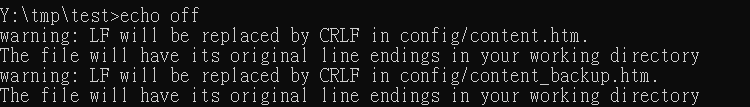
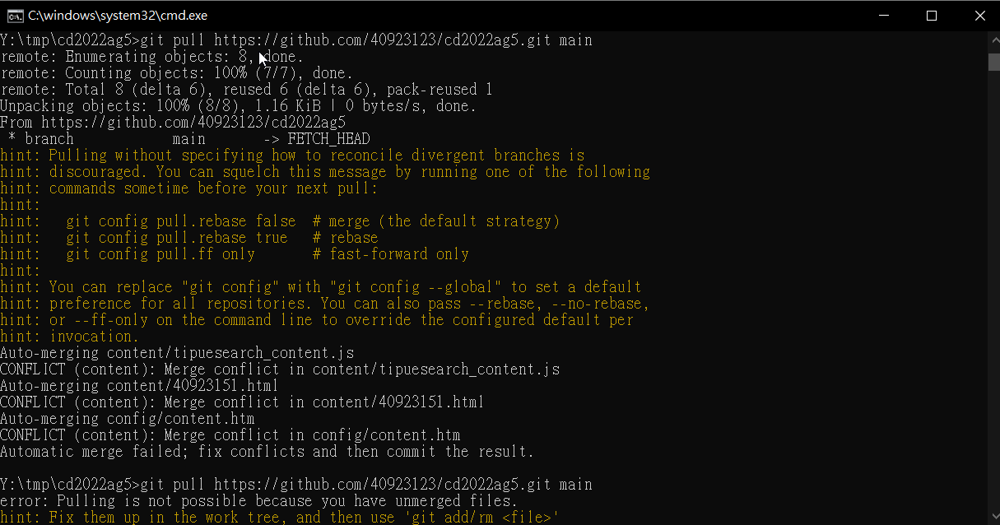

w12_task <<
Previous Next >> w10_block_ui
大組倉儲更新步驟
這一頁會講解應該如何更新大組倉儲步驟跟必須知道的東西
首先在開始之前大家其實可以觀察一下你每次在更新網站也就是利用cmsimde時就竟都更改些什麼東西呢?

其實更改的檔案通常有三個其中兩個html檔事記錄你所有網頁的檔案，一個是現在一個是之前，然後還有一個js黨是老師的搜尋系統會自動抓取字串的程式，所以其實在更改之前你會發現如果要進行協同只要處理這三個檔案衝突即可，而js黨則是必須想辦法更改它程式再擷取字串的步驟或這手動暴力應改等之類的，簡單來說是這樣再來以下還有必須注意的。
協同問題篇
須注意同時的問題由於上述所說的主要是js黨的問題導致今天不管是同時修改同一頁資料或不同頁又或者不同頁的資料(是有不同差異的，另解說)都必須解決檔案相衝問題，在github上若檔案相衝github會幫忙用一個特殊格是把兩個相衝的部分框起來並告知，其實只要修改符合合併就能合併了。
步驟解說篇
在步驟前必須先完成以下步驟
1.必須每個成員先將大組倉儲給fork，這樣就能獲得一個自己帳號的大組倉儲
2.clone自己帳號的大組倉儲
3.將倉儲內推送時的person key或者使用ssh的小夥伴必須將.git裡的內容修改成如同自己倉出一樣
這樣就算完成了前置步驟了
再來以下正式進入步驟
1.更改完自己想要的內容後先用正常手續將內容推送至自己帳號下的大組倉儲
2.在github上選擇Pull requests的按鍵
3.將merge的消息傳回給組長的大組倉儲(綠綠的給他按下去就對了
4.組長查驗確認沒問題即可merge
以上即是正常流程下最順利的狀況，接下來會稍微說明版本同步問題以及merge的衝突問題以及如何解決
首先當近端及遠端的部分不同步
因當先將github上的版本給同步，在觀察commit那一欄要是組長倉儲有更新那裏就可以更新版本
變成和組長一樣，再來在近端用git pull將資料從遠端給抓下來做合併，這樣就完成了最簡單的更新自己的倉儲了。
那如果在github上無法合併可以怎麼做呢? 那說明一件事你在進行merge時跟別人衝突到或者格是有問題之類的，簡單來說就是有問題之後沒更改之後又繼續更新所導致的，那可以試試以下的方法

前面有說道能使用git pull進行同步，但是如果自己帳號下github的資料就不對了就算git pull也沒辦法那就使用git pull 組長大組倉儲網址.git main
將正確內容最新版本同步下來後重新push一次到自己帳號下的大組倉儲，這樣就可以將遠端成功更新成正確的版本了
w12_task <<
Previous Next >> w10_block_ui